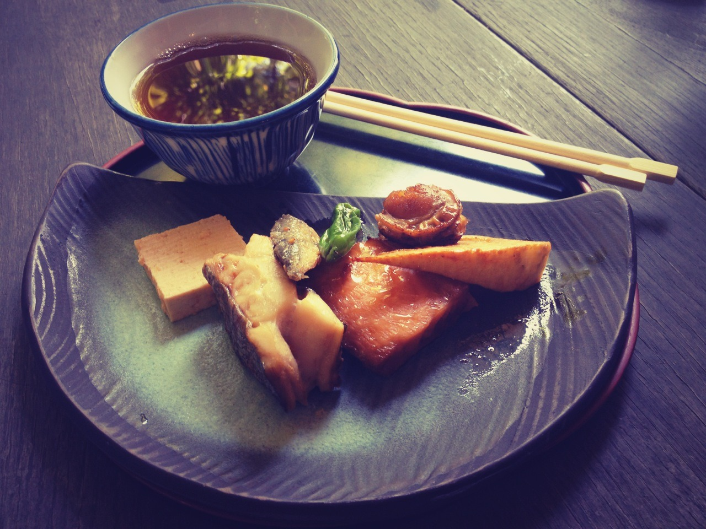
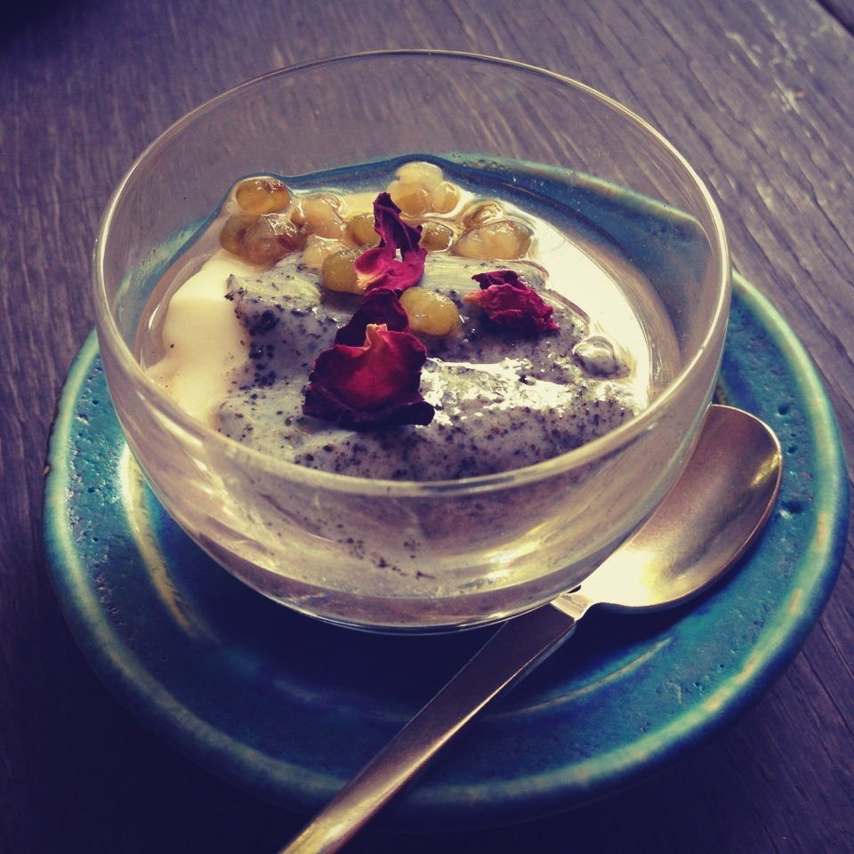
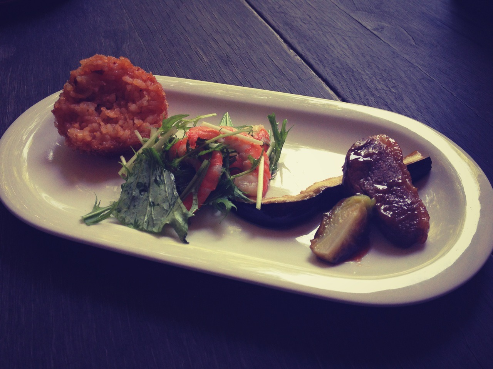

← All Dispatches
TOKYO
2 JUN 2012
Some Japanese Cuisine you rarely seen. • Kita-Kamakura, Japan.



japan
tokyo
kitakamakura
cuisine
food
travel
wanderlust
kamakura
← Prev Dispatch
Next Dispatch →